Task
The task was to get in contact with an optional company and create something for them. The focus of the project was to follow the Design-Build-Test process.
Concept Idea
We all love music quizzes, and it's something my group members and I did a lot together. From this, we came up with the idea to design a music quiz feature for a music streaming service. We contacted the company and pitched our idea.
The idea was to design a feature for their existing application that would enable users to create, host, and participate in music quizzes, either with their friends or with random people. Many online quizzes today only allow participants to answer the current question, but we wanted to make the quiz similar to a traditional music quiz with paper and pen, allowing participants to view the entire quiz and edit past questions.
We want the quiz creator to have the ability to AI generate questions based on the participants' music tastes. This feature can help the creator quickly craft a quiz that aligns with the participants' preferences.
Target Group
The target group for this project included people aged 20-40 with an interest in music quizzes.
Process
Our design process went through many iterations as we discovered new ideas while testing the prototypes on the users.
When designing, we followed the company's graphical design guidelines and rules, which was both interesting and fun. This allowed us to focus more on optimizing the user flow rather than making design components choices.
One significant challenge was designing the UI while the game was ongoing. We had to create two interfaces for the same sections of the game: one view for the participants and another for the game host. When designing the two interfaces, it was crucial to consider how actions in one interface affected the other to ensure that the flow of events followed a chronological order.
Result
We completed the design as an interactive high-fidelity prototype, which we demonstrated to the rest of the class and the company.
Create quiz

1. Create new quiz
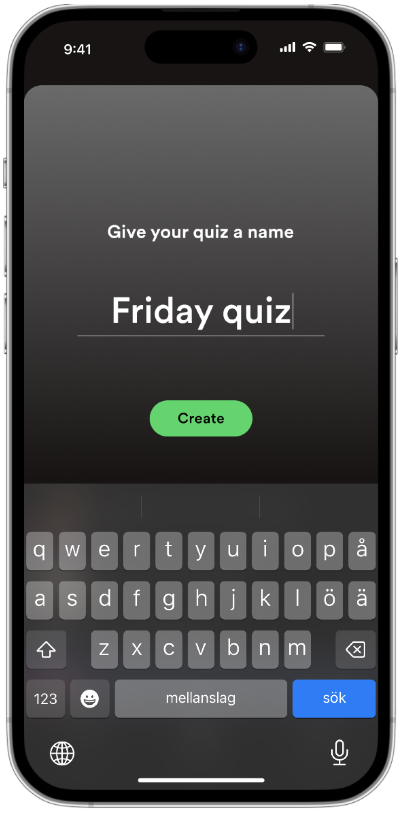
2. Name quiz
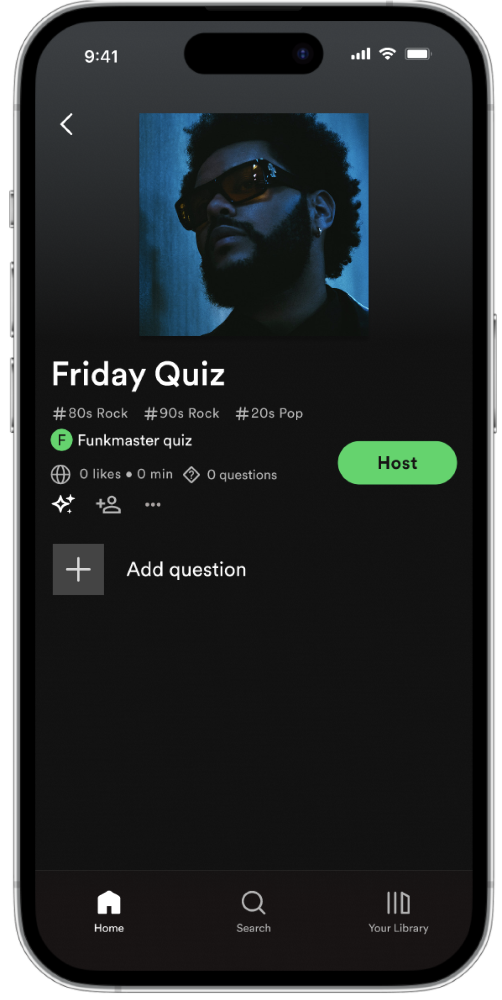
3. Empty quiz. Now you can add questions

4. Add question, choose between different types of question templates

5. Add song for the question
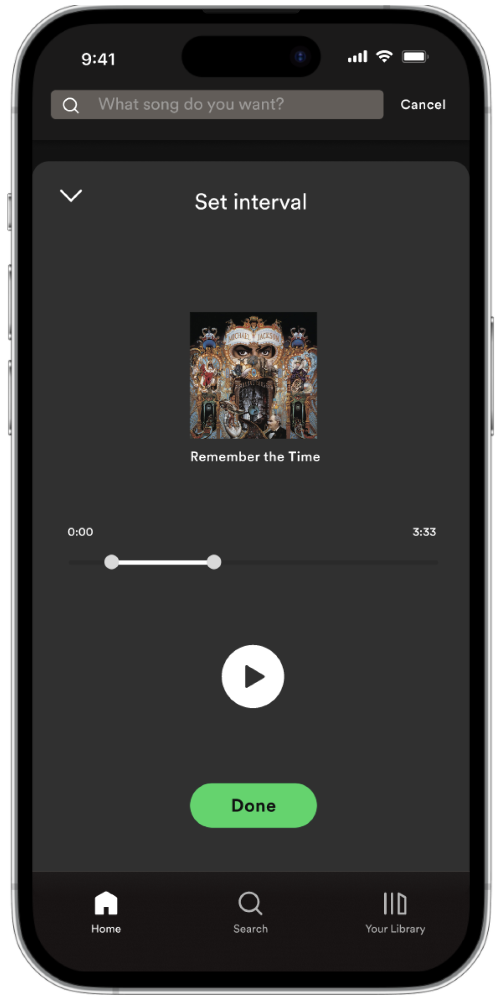
6. Set interval for the part you want to play for this question

7. Based on question template and choosen song, the answer for the question will be generated. They can also be edited if needed.

8. First question is now added

9. If you want to create questions with the AI generator, press the marked button

10. Now we can se that it generated multiple questions. The songs in thoes questions are based on the participants playlists
Host quiz

1. Invite friends and start quiz

2. The quiz has started, but no questions are currently active. You can choose to play the questions in any order. When a question is played, its answer form will become available to all participants.

3. Start Question 1. Click on the question or slide the bar below to view more details.

4. Here, you can view detailed information about the question. You can use the number carousel below to navigate between questions. You can see that this question is activ becouse of the green color.
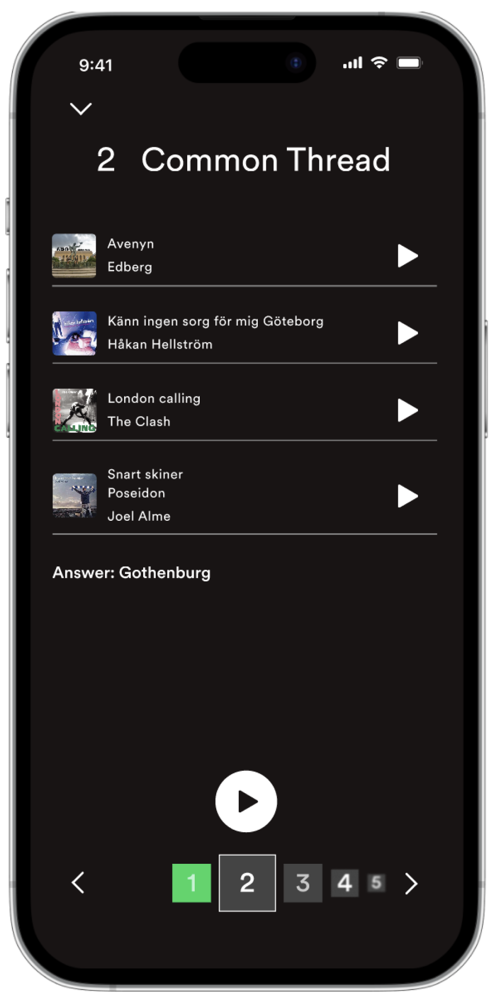
5. This is what it looks like when you navigate to a question that is not currently being played for the participants.

6. Now you're playing Question 2. This is a different type of question that includes four songs. You can either press the gig play button to play the songs in order or select and play specific songs if you don’t want to play them all.

7. When finished, you can review and "correct" the participants' answers.
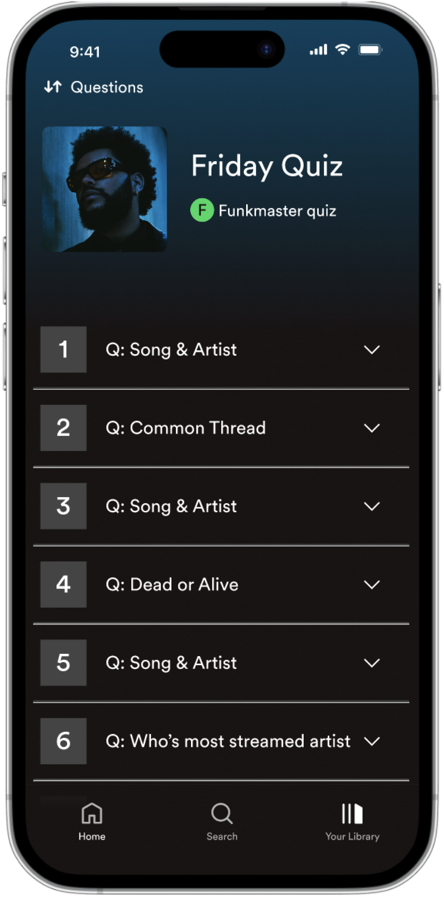
8. Overview of all the question in the quiz
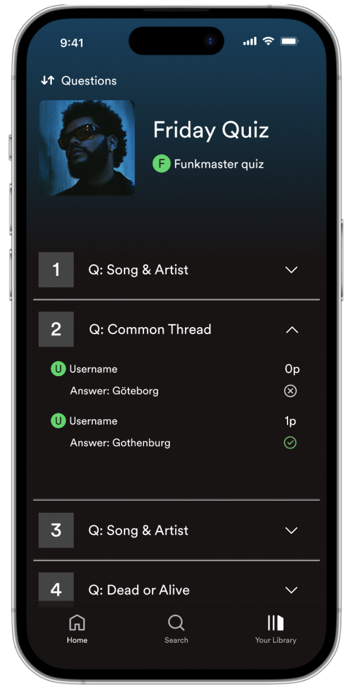
9. Open to view the participants' answers. The app will automatically correct them, but you can manually adjust the points if needed.

10. When done, you can present the result for the participants

11. The winners will then be displayed
Participate in quiz

1. Get invited to quiz by QR-code or link
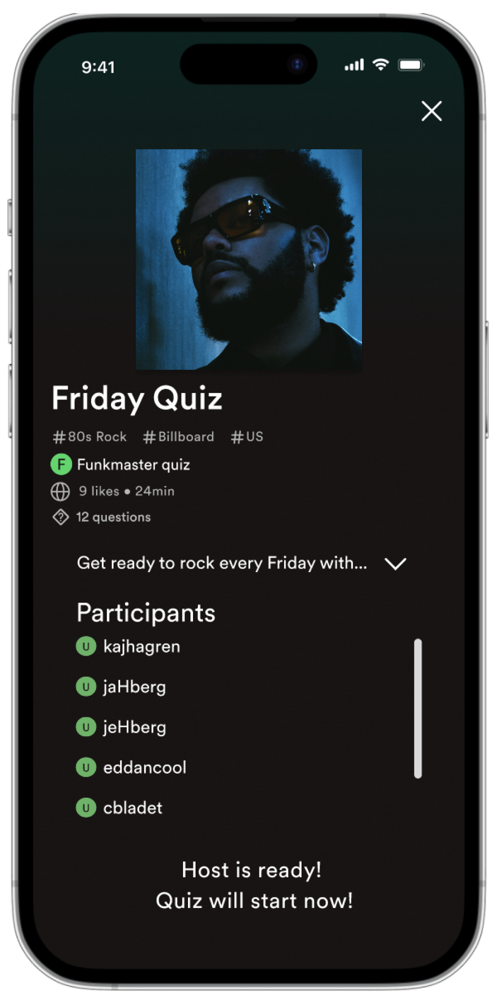
2. Wait for host to start quiz

3. Quiz is now started and question 1 is now playing
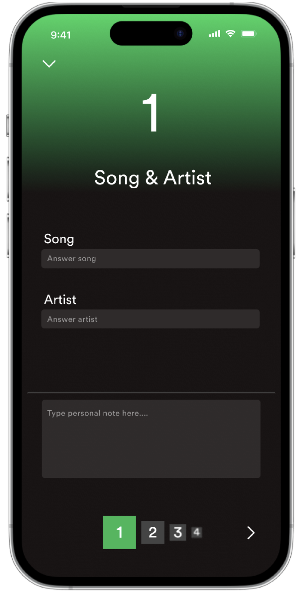
4. Click on the question to open the answer form. The active question is highlighted in green.
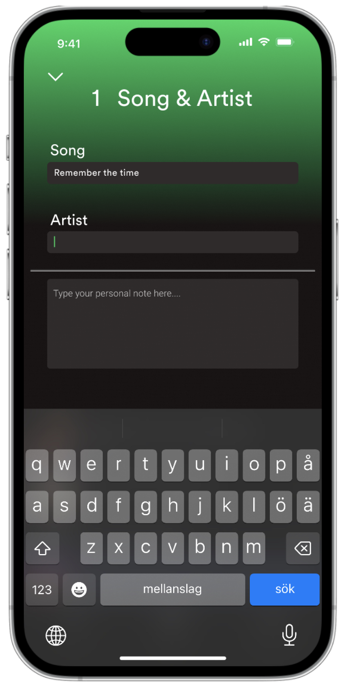
5. Type in answer. You can always go back and edit answer later.
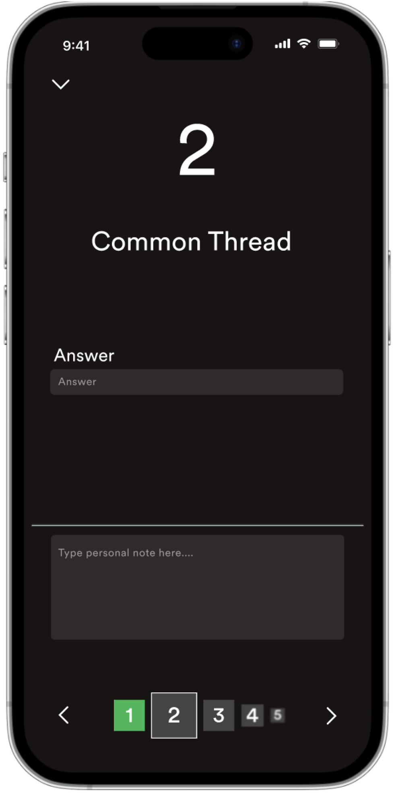
6. Move to next question and wait for it to be active.
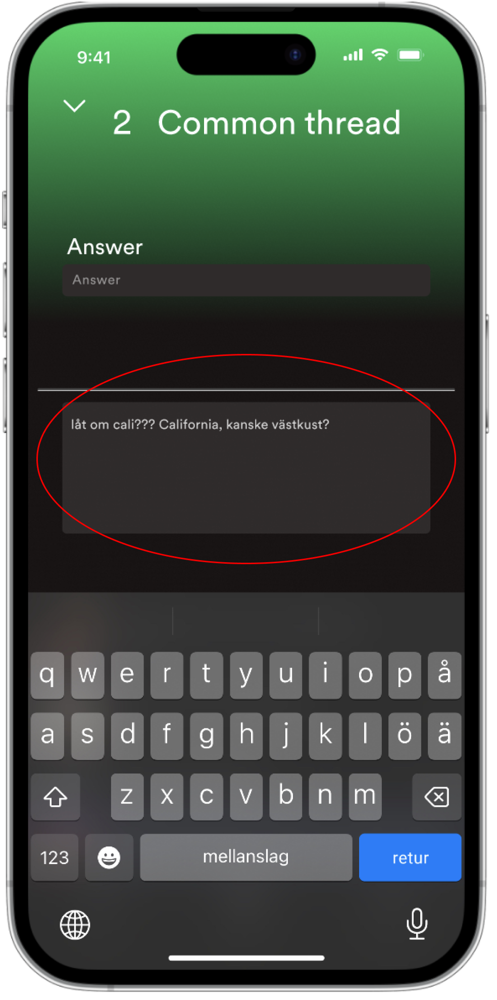
7. If you're unsure of the answer but want to leave a note for later, you can add it in the highlighted box.

8. If you've added a note to a question, it will be indicated by the "notebook" icon.

9. Once the quiz is finished, the winners will be displayed

10. Then you can take a closer look at your result and check if you need to appeal the result to the host! :D